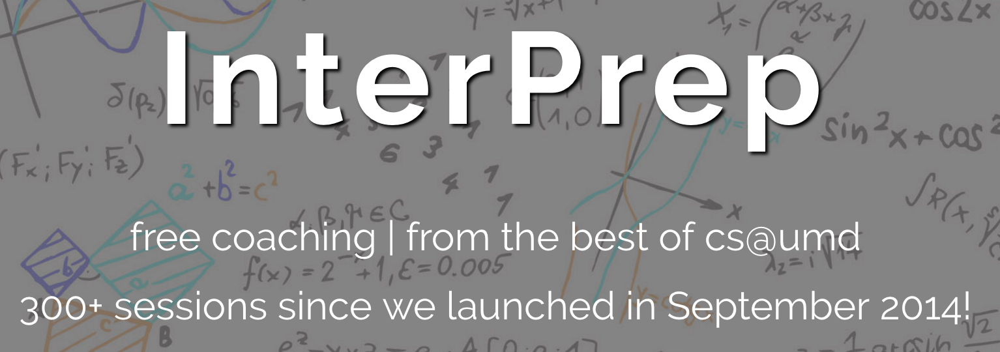
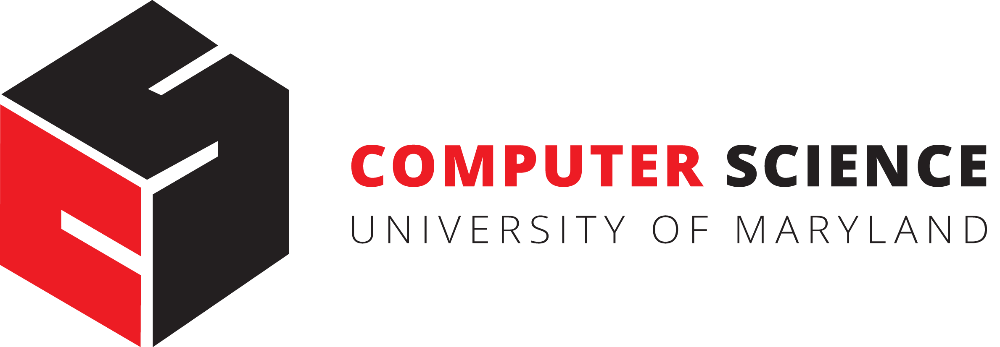

Software Engineer Intern
Teaching Assistant
Research Assistant
Cloud Software Engineer Intern

Interprep is a group here at UMD that helps students prepare for technical interviews.
I am an admin and a coach for the group.
Technica is an all womens hackathon that I teach a web development workshop at.
This is the site that students learn how to create so they can have their own personal page!

Department of Computer Science
Education Committee
I serve as an undergraduate representative on the Education Committee of the Department of Computer Science at Maryland.